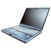

Fujitsu-Siemens Lifebook S-6120
Archivierte Anleitung
Dieser Artikel wurde archiviert, da er - oder Teile daraus - nur noch unter einer älteren Ubuntu-Version nutzbar ist. Diese Anleitung wird vom Wiki-Team weder auf Richtigkeit überprüft noch anderweitig gepflegt. Zusätzlich wurde der Artikel für weitere Änderungen gesperrt.
Zum Verständnis dieses Artikels sind folgende Seiten hilfreich:

Diese Anleitung beschreibt alle nötigen Schritte, um Ubuntu auf einem Fujitsu-Siemens Lifebook S-6120 sowie S-6120D und wahrscheinlich auch andere Modelle der Lifebook S-Serie in vollen Umfang verwenden zu können. Das Notebook läuft unter Ubuntu praktisch sofort nach der Installation vollständig. Nur für den vollen Funktionsumfang des Touchpads, der Sondertasten und bestmöglicher Energieverwaltung müssen nachträglich Konfigurationen vorgenommen werden.
BIOS Update¶
Auch wenn man jetzt Linux verwendet, sollte man sein BIOS aktuell halten. So funktionieren die Mauswippe und Standbyfunktionen erst problemlos mit dem aktuellen BIOS. BIOS-Updates findet man im Supportbereich  der Hersteller-Homepage. Für das Upgrade steht ein iso-Image bereit, mit dem man eine bootbare CD erstellen kann und somit auch ohne ein installiertes Windows problemlos das BIOS auf einen aktuellen Stand bringen kann.
der Hersteller-Homepage. Für das Upgrade steht ein iso-Image bereit, mit dem man eine bootbare CD erstellen kann und somit auch ohne ein installiertes Windows problemlos das BIOS auf einen aktuellen Stand bringen kann.
Tastatur¶
Als Tastatur sollte auf "Generic 102-key (Intl) PC" oder "Generic 105-key (Intl) PC" eingestellt werden. Nur so kann man über Fn + Druck Screenshots erstellen. Mehr dazu findet man im Wiki unter Spracheinstellungen.
Hardware¶
Sämtliche Hardware des Notebooks funktioniert ohne dass zusätzliche Treiber installiert werden müssen. WLAN, Grafik sowie Soundausgabe funktionieren sofort, da die eingesetzte Hardware vollständig ohne proprietäre Treiber auskommt.
Bildschirm¶
Der Bildschirm des Laptops ist 272mm breit und 202mm hoch. Daraus ergibt sich eine Auflösung von 95dpi, die man so auch in den Einstellungen der Desktopumgebung setzen sollte.
Touchpad¶
Das Touchpad funktioniert unter Ubuntu sofort. Allerdings ist nur die Basisfunktionalität gegeben. Des weiteren kommt es zu dem Phänomen, dass der Mauszeiger nach dem Rechnerstart bei den ersten Berührungen wild umher springt. Durch das Setzen zweier Kernelparameter wird dieses Problem gelöst, sowie erweiterte Funktionen wie Scrollen oder das Deaktivieren des Touchpads beim Tippen aktiviert.
Bis Ubuntu 9.04 (Jaunty Jackalope) sieht die Lösung folgendermaßen aus.
Man öffnet die Datei /boot/grub/menu.lst in einen Texteditor mit Root-Rechten [3] und fügt in der "defoptions"-Zeile die Optionen "i8042.reset i8042.nomux" ein. Am Ende sollte dies so
## additional options to use with the default boot option, but not with the ## alternatives ## e.g. defoptions=vga=791 resume=/dev/hda5 # defoptions=quiet splash i8042.reset i8042.nomux
aussehen. Nun müssen diese Optionen noch bei allen Kernelzeilen eingetragen werden. Dies kann man durch den Befehl
sudo update-grub
erreichen.
Ab Ubuntu 9.10 (Karmic Koala) wird der Bootloader GRUB 2 verwendet, bei diesem befinden sich die Konfigurationsdateien an einem anderen Ort.
Man öffnet die Datei /etc/default/grub.lst in einen Texteditor mit Root-Rechten [3] und fügt in der "GRUB_CMDLINE_LINUX_DEFAULT="quiet splash"-Zeile die Optionen "i8042.reset i8042.nomux" ein. Am Ende sollte dies so
GRUB_CMDLINE_LINUX_DEFAULT="quiet splash i8042.reset i8042.nomux"
aussehen. Nun müssen diese Optionen noch bei allen Kernelzeilen eingetragen werden. Dies kann man durch den Befehl
sudo update-grub
erreichen.
Mehr zu diesem Thema findet man im Wiki unter Booten und Touchpad.
Zusätzliche Kernelmodule¶
Für das Notebook gibt es ein paar Treiber, sprich Kernelmodule, die man installieren kann, um die Funktionen des Notebooks vollständig auszureizen. Es ist jedoch nicht unbedingt nötig diese Module zu installieren. Um Kernelmodule erzeugen zu können, müssen die nötigen Pakete zum Kompilieren [5] von Programmen sowie das Paket
linux-headers-generic
 mit apturl
mit apturl
Paketliste zum Kopieren:
sudo apt-get install linux-headers-generic
sudo aptitude install linux-headers-generic
auf dem Rechner installiert [1] sein. Im Folgenden wird vorausgesetzt, dass die genannten Pakete installiert sind. Damit die erzeugten Module bei jedem Start des Rechners automatisch geladen werden, sollte man sie noch in die /etc/modules eintragen. Mehr dazu im Wiki unter Kernelmodule.
Sondertasten¶
Hinweis:
Dieser Abschnitt funktioniert nicht mit Ubuntu "Intrepid Ibex" 8.10. Das Kernel-Modul existiert bislang nicht für Kernel 2.6.27.
Die Sondertasten oberhalb der Funktionstasten funktionieren nach der Installation nicht. Sie benötigen ein Kernelmodul, das nicht von Ubuntu in den Kernel eingebaut wird. Man kann das Modul als Archiv von der Homepage  des Projektes herunterladen. Danach kann man das heruntergeladene Archiv entpacken [4], in das neu erstellte Verzeichnis wechseln und das Modul mittels dem Befehl [2]
des Projektes herunterladen. Danach kann man das heruntergeladene Archiv entpacken [4], in das neu erstellte Verzeichnis wechseln und das Modul mittels dem Befehl [2]
sudo make KERNEL_SOURCE=/lib/modules/`uname -r`/build modules_install sudo modprobe fjpanel
erzeugen und auch gleich installieren. Nach einem Neustart kann man die Sondertasten nun beispielsweise in GNOME über die Funktion Tastenkürzel nutzen.
Helligkeit des Bildschirms regeln¶
Eigentlich kann Linux über ACPI die Helligkeit des Bildschirmes regulieren, ohne dass man die Tasten auf dem Notebook benutzen muss. So wird üblicherweise die Helligkeit des Bildschirmes automatisch reduziert, um die Laufzeit des Rechners im Akkubetrieb zu maximieren. Leider funktioniert das nicht, weil Fujitsu-Siemens sich hier nicht an die Standards hält. Allerdings gibt es ein Kernelmodul, das man sich installieren kann, um auch mit einem FSC Notebook diesen Komfort zu haben.
Ab Ubuntu "Hardy Heron" 8.04¶
Seit dem Kernel 2.6.24 gibt es ein Kernelmodul, was speziell solche Funktionen für Laptops von Fujitsu-Siemens bereitstellt. Es nennt sich "fujitsu-laptop" und ist von Haus aus im Kernel enthalten. Es kann via
sudo modprobe fujitsu-laptop
geladen werden. Von nun an kann man via
## Allgemein echo <1-7> > /sys/class/backlight/fujitsu-laptop/brightness ## Beispiel: Monitor auf niedrigste Helligkeit stellen echo 1 > /sys/class/backlight/fujitsu-laptop/brightness
die Helligkeit des Bildschirmes regeln. Damit dies automatisch geschieht, legt man die Datei /etc/acpi/battery.d/fsc_brightness.sh mit dem Inhalt
#!/bin/bash echo 1 > /sys/class/backlight/fujitsu-laptop/brightness
sowie die Datei /etc/acpi/ac.d/fsc_brightness.sh mit dem Inhalt
#!/bin/bash echo 7 > /sys/class/backlight/fujitsu-laptop/brightness
an [3]. Diese beiden kleinen Skripte werden nun automatisch beim ab- bzw. anstecken der Stromversorgung ausgeführt und somit die Helligkeit des Displays geregelt. Die Helligkeitswerte kann man je nach Belieben eintragen.
Strom sparen¶
Durch ein paar Kniffe ist es möglich die Spannung der CPU zu senken und so die Laufzeit des Akkus zu verbessern. Dazu muss ein Kernel-Modul gepatchet und neu kompiliert werden. Informationen dazu sind im Wiki unter Prozessorspannung absenken zu finden. Hat man dieses Modul erzeugt, so kann man die Spannung der CPU absenken. Dazu erzeugt man am besten das Verzeichnis /etc/phc-config und speichert dorthin die Konfigurationsdatei undervolt ab. Als Inhalt kann man
# CONFIG_FILE FOR UNDERVOLTAGING# # Path to the voltage table sysfs interface file VTABLE_PATH="/sys/devices/system/cpu/cpu0/cpufreq/phc_vids" # Switch back to DEFAULT_VTABLE if undervoltage is stopped? [yes/no] SWITCH_BACK="yes" # Default voltages that will be restored at shutdown if SWITCH_BACK=yes # DEFAULT_VTABLE="15 14 13 11 10 7" DEFAULT_VTABLE="49 45 36 29 21 16" # Custom voltages that will be applied at boot time # CUSTOM_VTABLE="8 6 4 2 1 0" CUSTOM_VTABLE="33 33 20 14 6 4" # Set the following to "yes" when the all the settings are configured # This is a safety to disable setting the voltages with the default # values of this file that are probably wrong for your CPU IS_CONFIGURED="yes"
übernehmen. Dies sind Werte, die sich beim Lifebook S-6120 bewährt haben. Sie ermöglichen weiterhin einen stabilen Betrieb, verlängern die Akkulaufzeit merkbar und lassen den CPU-Lüfter seltener anlaufen, weil die CPU nun weniger Hitze erzeugt. Im Vorfeld sind jedoch die Anzahl der Spannungswerte zu prüfen
cat /sys/devices/system/cpu/cpu0/cpufreq/phc_controls
und ggf. in der Konfigurationsdatei anzupassen.
Damit die Werte beim Booten des Rechners geladen werden sollte man dieses  init-Skript nach /etc/init.d herunterladen und es über
init-Skript nach /etc/init.d herunterladen und es über
sudo chmod +x /etc/init.d/undervolt sudo update-rc.d undervolt defaults
in den Bootprozess einbinden.
Schlafmodi¶
Gängige Schlafmodi sind "Standby" ("Bereitschaft"), "Suspend to RAM" ("Schlafmodus") oder "Suspend to Disk" ("Ruhezustand"). In dem Artikel Schlafmodi wird beschrieben, wie man den Modus Schlafmodus aktivieren kann und wie man mögliche Probleme löst.
Hardware-Info¶
| Fujitsu-Siemens Lifebook S-6120 und S-6120D | |
 | |
| Bildschirm | 13.3" TFT-XGA Display mit 1024x768 Auflösung |
| Grafikkarte | Integriert im Chipsatz Intel 855GM |
| CPU | Pentium M mit 1.40 bzw. 1.60 GHz |
| RAM | Je nach Austattung |
| HD | 40 bzw. 60 GB |
| CD/DVD | DVD/CD-RW Kombilaufwerk |
| Sonstiges | Intel PRO/Wireless 2100 LAN und Bluetooth (nur S-6120), LAN, 2 USB-Anschlüsse, Mikrofon, Stereo-Lautsprecher, Soundkarte, Touchpad, Scrollwippe, Infrarot |
- Erstellt mit Inyoka
-
 2004 – 2017 ubuntuusers.de • Einige Rechte vorbehalten
2004 – 2017 ubuntuusers.de • Einige Rechte vorbehalten
Lizenz • Kontakt • Datenschutz • Impressum • Serverstatus -
Serverhousing gespendet von